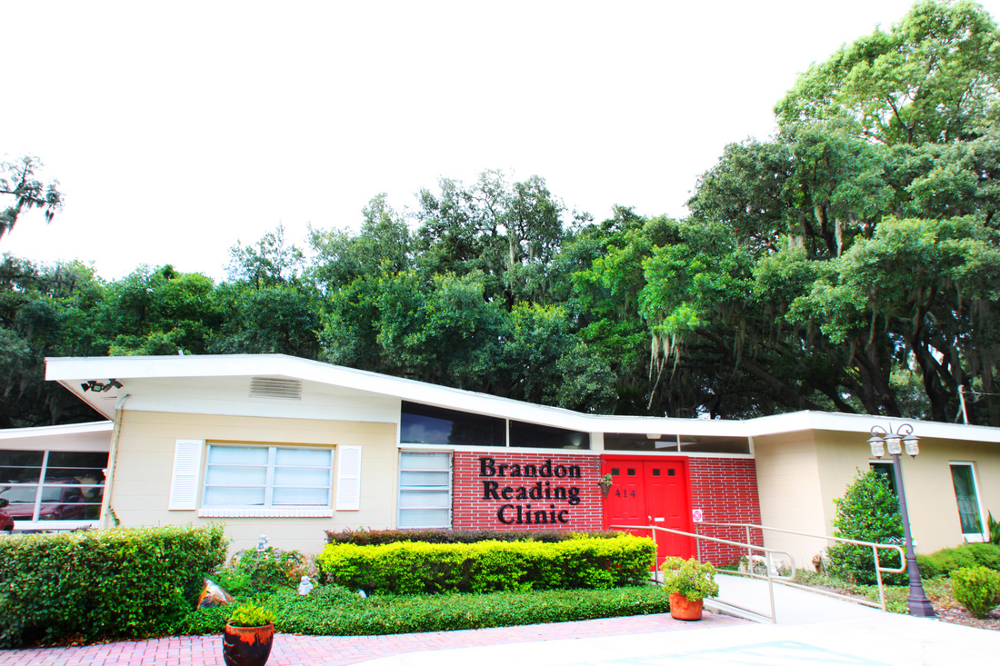
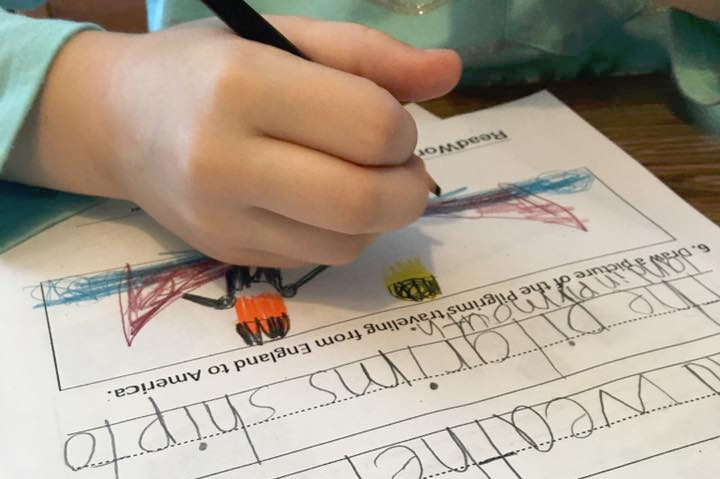
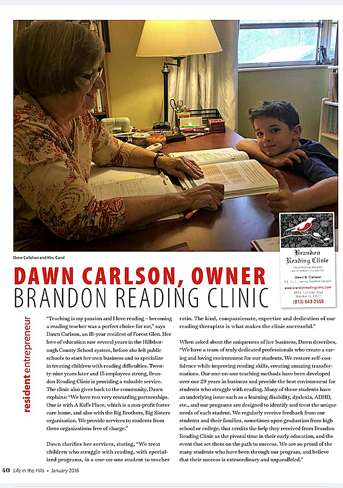
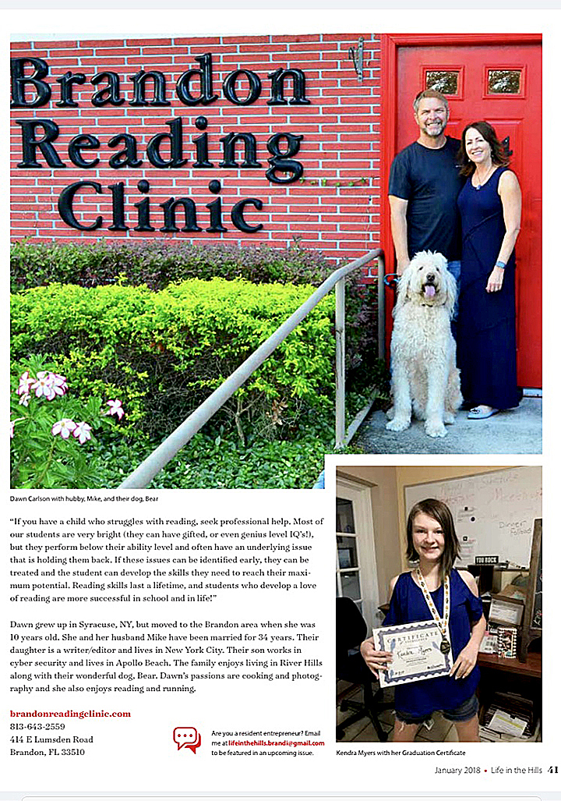

The expertise and experience of our educational therapists in addressing reading problems, learning disabilities and dyslexia is unparalleled. Our specialized programs are research-based and scientifically proven to be the most effective/efficient for improving the reading skills of children with learning disabilities, dyslexia or other problems. If you have any questions, please complete the Contact Form or give us a call at (813) 643-2559. Our staff is here to assist and help you any way that we are able.
Our reading therapy sessions are conducted in a one on one setting between the student and the reading therapist. Generally, students are seen once a week, with each session lasting forty-five minutes. Our sessions only consist of scientific, research-based, proven methods in order to produce superior results. Our therapists are highly trained in Lindamood-Bell programs, as well as Orton Gillingham techniques. Our approach is the best option for many children with reading problems, including those with learning disabilities that have tried other treatment programs with disappointing results.
Brandon Reading Clinic and its predecessor companies have been serving the city of Brandon, FL and surrounding communities for over twenty years, since 1988! Our clinic is located in the heart of Brandon, just off East Lumsden Road and West of Bryan Road.

Our Current Location, 414 E. Lumsden Road
We provide weekly instructional sessions that are delivered at a one-on-one therapist/student ratio only. Our therapy sessions consist solely of scientifically proven programs that are backed with years of research published in reputable national and international journals. Our clinicians/therapists are highly trained in specific programs designed to assist students with special learning needs. Our clinicians are updated with current research through professional memberships with International Dyslexia Association (IDA), The International Reading Association (IRA), and The Council for Exceptional Children.

Brandon Reading Clinic provides assistance with students who struggle in areas of reading, spelling, writing, elementary math and general study skills. Our strategy is to identify the specific needs of each child and design an Individual Education Program that best suits the individual needs. Our programs are effective for a child that is experiencing small or large educational struggles or to boost a child's performance who is already performing at their grade level.
Our reading and writing programs are very effective in preventing the "slip" that many students experience over summer break & holidays. They also can give young students a head start in the education process.
An estimated 1 in 5 children experience some type of reading struggle. There are many types of reading difficulties, dyslexia being the most common. Regardless of the type and cause, early recognition of a reading struggle is critical. If a reading struggle is present, the earlier the diagnosis and treatment, the better the odds of a positive outcome. In addition to improving a child's reading skills, early treatment can help to boost a child's self esteem.
These problems generally do not improve on their own! While a child may show some signs of improvement as they mature, if they have an underlying problem, they will continue to underperform relative to their ability. Research proves early treatment is essential and can provide a lifetime of benefits!
We love this question — YES, Brandon Reading Clinic is very different than the national chains like Sylvan and Huntington, as well as most other local tutoring companies in the Tampa area. First off, we'll never require you to sign a 'long-term' contract before receiving therapy. Next, unlike the 'chain' therapy centers, who often place the student in a group setting and assign a teacher or monitor to check the progress of the student on general assignments or on a computer based educational program. We provide intensive, focused, one-on-one therapy that is designed to achieve results for the specific student with whom we are working. The results achieved through our one-on-one interaction are nearly always far superior to results from other teaching methods. Also, our therapists are highly trained in several nationally recognized programs and are able to continuously monitor the progress of the student and make adjustments in the educational plan to assure success.
Another significant advantage of the one-on-one teaching model is that it allows us to truly connect with our students. Many times when a student has struggled in school, they lose their self-confidence. They can begin to think that there is something wrong with them, or that they are just not as smart as the other kids in their class. If not addressed, this can have devastating, prolonged effects on a child (and his family). We love our students and we work hard to restore their confidence and self-worth. Please see some of the letters from parents in the testimonial section of our web site. Improved self-confidence can often bring a child out of their shell, and improves their overall quality of life just as much as their improvement in academic performance.
Many students who have a learning disability are very bright and it is not uncommon for them to have an above average IQ. One of the definitions of a learning disability is underperformance relative to the true ability level (such as measured by an IQ). Sometimes, it is more difficult to recognize a learning problem in a very bright student because they are able to find ways to get around the problem. However, as discussed above, if the student has a learning problem that is not addressed, they will continue to underperform relative to their ability level. If you even suspect that a learning problem may exist, it is very important to get an evaluation completed by a professional. When a learning problem is addressed at an early age, the problem can often be identified and remediated. This can provide a lifetime of benefit to the student!
Students who struggle with a learning disability often show signs of improvement as they mature. They learn ways to compensate in their classroom and to get by. Unfortunately, these coping mechanisms do not address their underlying problem. If they do not get help that specifically targets the learning disability, they will continue to underperform relative to their true ability. Don't Delay! A learning disability will not improve if it is not addressed - if you suspect that a learning problem may exist, have an evaluation completed by a professional trained to recognize learning disabilities.
If you're only comparing the price of our one-on-one instructional session to the cost of a group tutoring session at other tutoring centers, we are more expensive. However, if you consider the actual amount of instruction that your child receives, the customized educational plan developed, and most importantly, the progress each student makes, we believe that our program is much less expensive in the long run. We achieve results quicker and often can fully remediate a student in much less time than that achieved with other methods. Every student is different and there are no absolutes, but results count and we are very proud of our 20+ year track record of achieving superior results.
Check out this article written about the Clinic, by our friends at Life in the Hills!

